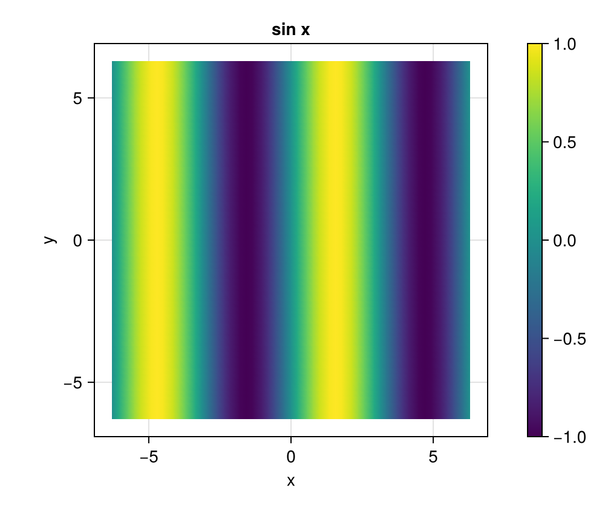
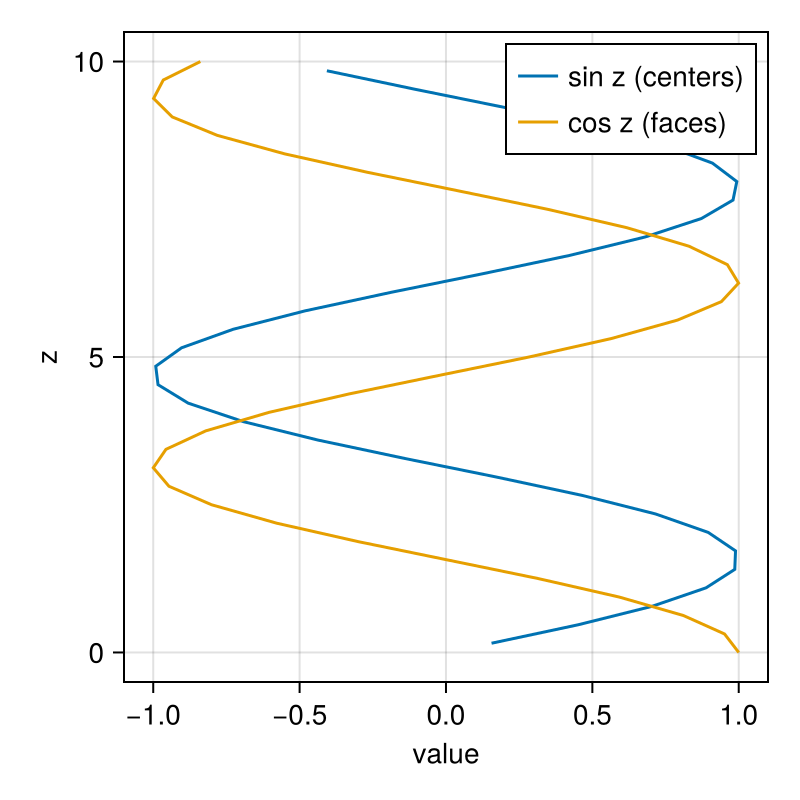
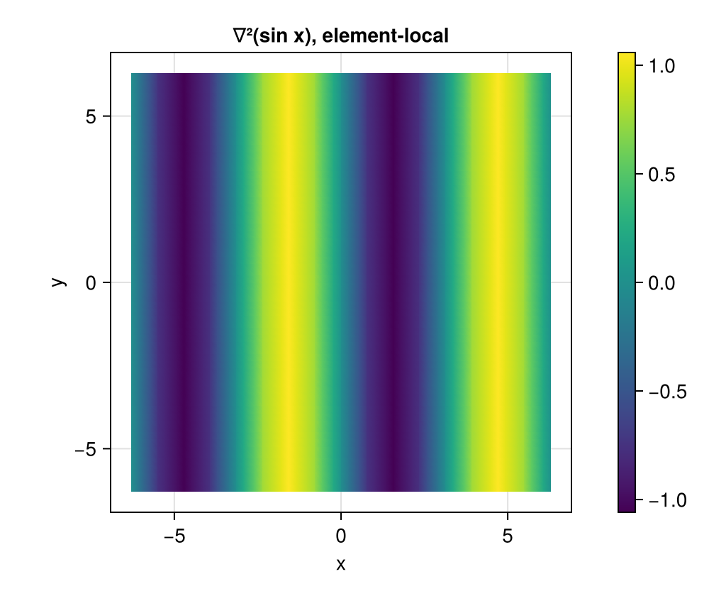
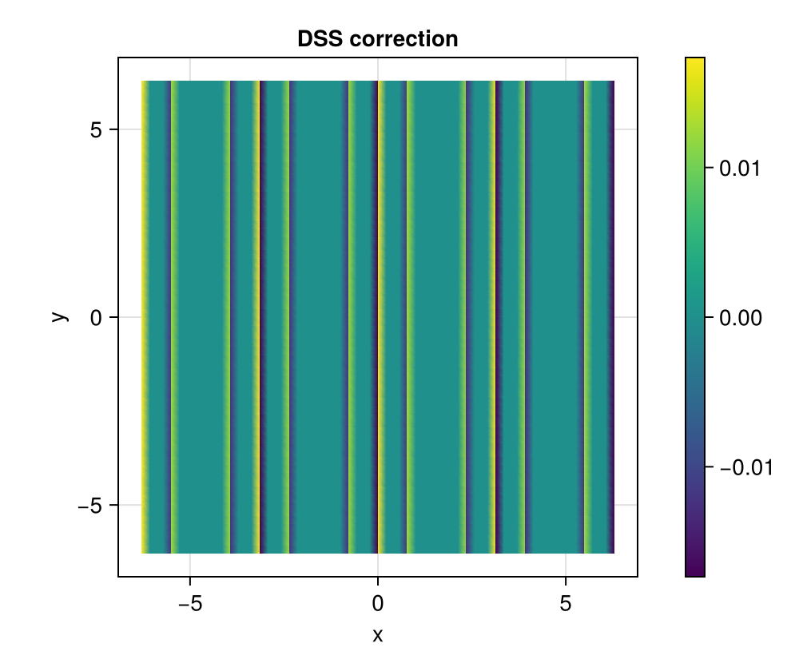
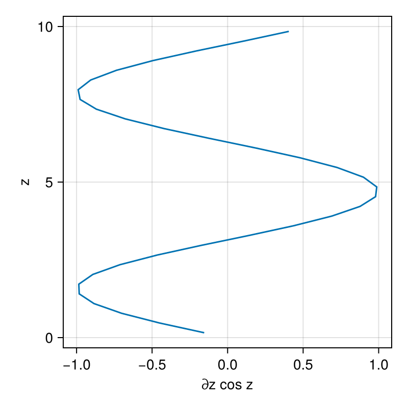
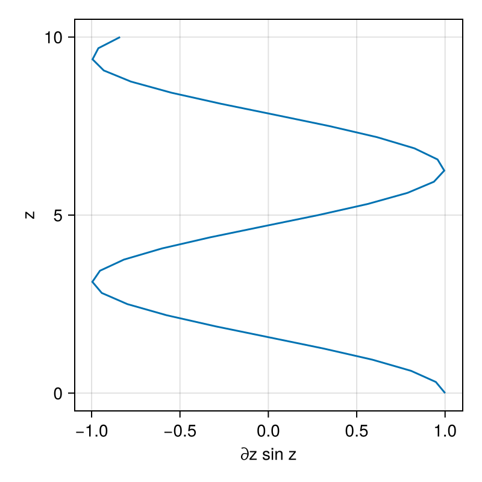
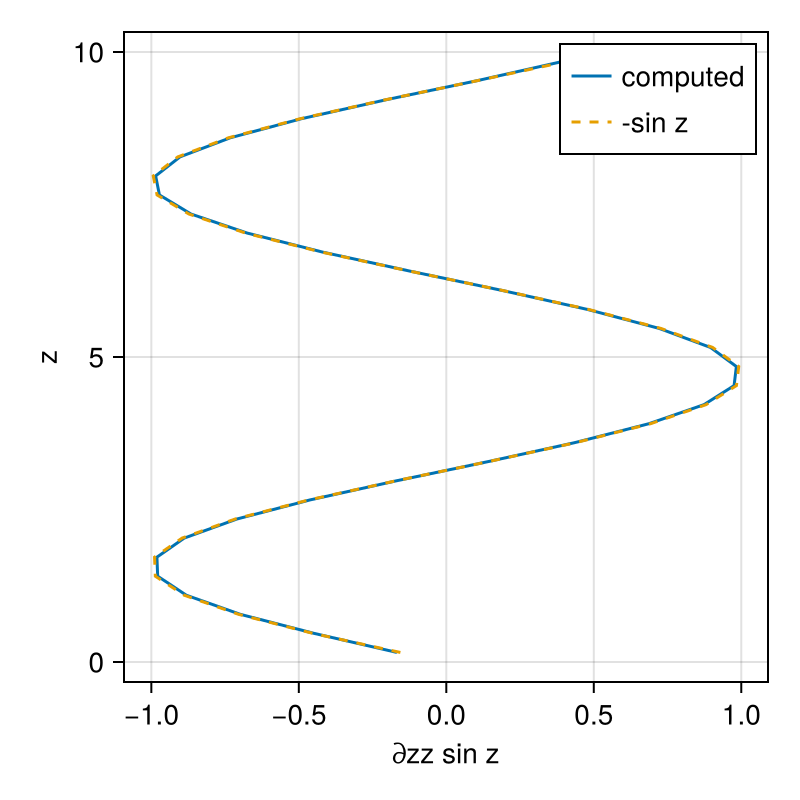

Tutorial: Fields and operators
This tutorial is available as a Jupyter notebook.
This tutorial builds a ClimaCore discretization from the bottom up: a domain, a mesh, a topology, a space, and fields on it. It then applies spectral-element and finite-difference operators to those fields and shows what the results look like. By the end, you have run every kind of object a ClimaCore model is made of; Concepts and design describes what each of them is for.
using ClimaComms
ClimaComms.@import_required_backends
using LinearAlgebra
using IntervalSets
import ClimaCore
import ClimaCore:
Domains, Meshes, Topologies, Quadratures, Spaces, Fields, Geometry, Operators
using CairoMakie
import ClimaCore.Visualize: fieldheatmap!
CairoMakie.activate!(type = "png")1. Domains
A domain is a region of space with named boundaries. Two domains serve the whole tutorial: a vertical interval of 10 m, and a doubly periodic square of side 4π.
column_domain = Domains.IntervalDomain(
Geometry.ZPoint(0.0) .. Geometry.ZPoint(10.0),
boundary_names = (:bottom, :top),
)
rectangle_domain = Domains.RectangleDomain(
Geometry.XPoint(-2π) .. Geometry.XPoint(2π),
Geometry.YPoint(-2π) .. Geometry.YPoint(2π),
x1periodic = true,
x2periodic = true,
)RectangleDomain: x ∈ [-6.283185307179586,6.283185307179586] (periodic) × y ∈ [-6.283185307179586,6.283185307179586] (periodic)2. Meshes
A mesh divides a domain into elements: 32 cells along the column, 16 × 16 elements over the square.
column_mesh = Meshes.IntervalMesh(column_domain, nelems = 32)
rectangle_mesh = Meshes.RectilinearMesh(rectangle_domain, 16, 16)16×16-element RectilinearMesh of RectangleDomain: x ∈ [-6.283185307179586,6.283185307179586] (periodic) × y ∈ [-6.283185307179586,6.283185307179586] (periodic)3. Topologies
A topology records which elements neighbor which, and which process owns each element in a distributed run. A two-dimensional mesh needs one; it is built with a ClimaComms context, which also fixes the compute device.
device = ClimaComms.device()
context = ClimaComms.SingletonCommsContext(device)
rectangle_topology = Topologies.Topology2D(context, rectangle_mesh)Topology2D
context: SingletonCommsContext using CPUSingleThreaded
mesh: 16×16-element RectilinearMesh of RectangleDomain: x ∈ [-6.283185307179586,6.283185307179586] (periodic) × y ∈ [-6.283185307179586,6.283185307179586] (periodic)
elemorder: CartesianIndices((16, 16))4. Spaces
A space is a discretized function space over a mesh. Two kinds exist.
4.1 Staggered finite differences
On the column, a function is represented by one value per cell, at either the cell centers or the faces between cells. The two spaces share one grid, so the face space is built from the center space without allocating new geometry.
column_center_space = Spaces.CenterFiniteDifferenceSpace(device, column_mesh)
column_face_space = Spaces.FaceFiniteDifferenceSpace(column_center_space)FaceFiniteDifferenceSpace:
context: SingletonCommsContext using CPUSingleThreaded
mesh: 32-element IntervalMesh of IntervalDomain: z ∈ [0.0,10.0] (:bottom, :top)4.2 Spectral elements
On the square, a function is a polynomial in each element, stored by its values at the nodes of a quadrature rule. Gauss–Lobatto–Legendre quadrature with 4 nodes per direction gives cubic polynomials and 16 nodes per element.
quad = Quadratures.GLL{4}()
rectangle_space = Spaces.SpectralElementSpace2D(rectangle_topology, quad)SpectralElementSpace2D:
mask_enabled: false
context: SingletonCommsContext using CPUSingleThreaded
mesh: 16×16-element RectilinearMesh of RectangleDomain: x ∈ [-6.283185307179586,6.283185307179586] (periodic) × y ∈ [-6.283185307179586,6.283185307179586] (periodic)
quadrature: 4-point Gauss-Legendre-Lobatto quadrature5. Fields
A field is a space together with a value at every node. The coordinate field is the first one to look at: it is a field of XYPoints, and its components are scalar fields.
coord = Fields.coordinate_field(rectangle_space)
x = coord.xFloat64-valued Field:
[-6.28319, -6.06611, -5.71487, -5.49779, -6.28319, -6.06611, -5.71487, -5.49779, -6.28319, -6.06611 … 6.06611, 6.28319, 5.49779, 5.71487, 6.06611, 6.28319, 5.49779, 5.71487, 6.06611, 6.28319]Fields are used through broadcasting, which works as it does for arrays, and the result is a new field on the same space.
sinx = sin.(x)Float64-valued Field:
[2.44929e-16, 0.215378, 0.538216, 0.707107, 2.44929e-16, 0.215378, 0.538216, 0.707107, 2.44929e-16, 0.215378 … -0.215378, -2.44929e-16, -0.707107, -0.538216, -0.215378, -2.44929e-16, -0.707107, -0.538216, -0.215378, -2.44929e-16]fieldheatmap! from ClimaCore.Visualize draws a two-dimensional field on its elements; a small helper adds a colorbar.
function heatmap_with_colorbar(field; title = "")
fig = Figure(size = (500, 420))
ax = Axis(fig[1, 1], title = title, aspect = 1, xlabel = "x", ylabel = "y")
plot = fieldheatmap!(ax, field)
Colorbar(fig[1, 2], plot)
return fig
end
heatmap_with_colorbar(sinx; title = "sin x")
On the column, the coordinate fields of the two staggerings interleave: 32 centers, 33 faces.
column_center_coords = Fields.coordinate_field(column_center_space)
column_face_coords = Fields.coordinate_field(column_face_space)ClimaCore.Geometry.ZPoint{Float64}-valued Field:
z: [0.0, 0.3125, 0.625, 0.9375, 1.25, 1.5625, 1.875, 2.1875, 2.5, 2.8125 … 7.1875, 7.5, 7.8125, 8.125, 8.4375, 8.75, 9.0625, 9.375, 9.6875, 10.0]Column fields are drawn with Makie directly from their nodal values and coordinates; parent exposes the underlying array.
column_values(f) = vec(parent(f))
fig = Figure(size = (400, 400))
ax = Axis(fig[1, 1], xlabel = "value", ylabel = "z")
lines!(
ax,
column_values(sin.(column_center_coords.z)),
column_values(column_center_coords.z),
label = "sin z (centers)",
)
lines!(
ax,
column_values(cos.(column_face_coords.z)),
column_values(column_face_coords.z),
label = "cos z (faces)",
)
axislegend(ax)
fig
Reductions integrate over the domain with the quadrature weights: sum is the integral of the field, zero for sin x over whole periods up to round-off, and norm is the L² norm normalized by the domain area, sqrt(∫f² dA / ∫dA), which is 1/√2 for a sine.
sum(sinx), norm(sinx), 1 / sqrt(2)(1.4593501251928635e-14, 0.7071067811865472, 0.7071067811865475)5.1 Vector fields
A vector field holds a vector at every node. Physical components are given in the local orthonormal basis, Geometry.UVVector on a plane; the operators below convert to the covariant and contravariant bases the coordinates need (see Hybrid grids and generalized coordinates).
v = Geometry.UVVector.(coord.y, .-coord.x)ClimaCore.Geometry.UVVector{Float64}-valued Field:
components:
data:
1: [-6.28319, -6.28319, -6.28319, -6.28319, -6.06611, -6.06611, -6.06611, -6.06611, -5.71487, -5.71487 … 5.71487, 5.71487, 6.06611, 6.06611, 6.06611, 6.06611, 6.28319, 6.28319, 6.28319, 6.28319]
2: [6.28319, 6.06611, 5.71487, 5.49779, 6.28319, 6.06611, 5.71487, 5.49779, 6.28319, 6.06611 … -6.06611, -6.28319, -5.49779, -5.71487, -6.06611, -6.28319, -5.49779, -5.71487, -6.06611, -6.28319]6. Spectral-element operators
Operators act on fields inside broadcast expressions. The gradient of a scalar returns a covariant vector; converting it to the orthonormal basis gives the physical components, which here should be (cos x, 0).
grad = Operators.Gradient()
∇sinx = grad.(sinx)
∇sinx_uv = Geometry.UVVector.(∇sinx)
norm(∇sinx_uv .- Geometry.UVVector.(cos.(x), 0.0))0.0016360508523548959The divergence of a gradient is a Laplacian, and because both operators are element-local, the result at element boundaries has seen only one element's side of the field.
div = Operators.Divergence()
∇²sinx = div.(grad.(sinx))
heatmap_with_colorbar(∇²sinx; title = "∇²(sin x), element-local")
Direct stiffness summation (DSS) completes the element-local result: each boundary node takes the weighted average of its copies in the neighboring elements. On a continuous (CG) space, this is how every spectral-element derivative is finished (DSS and numerical fluxes).
∇²sinx_dss = Spaces.weighted_dss!(copy(∇²sinx))
heatmap_with_colorbar(∇²sinx_dss .- ∇²sinx; title = "DSS correction")
7. Finite-difference operators
Finite-difference operators move between staggerings and reach across cell boundaries, so they need no DSS but may need boundary conditions. Centers are indexed by integers 1, …, n; faces are addressed with the PlusHalf type, half, 1 + half, …, n + half (half = ClimaCore.Utilities.half), an integer tagged as a face position, which the docstrings write as ½, …, n + ½.
A face-to-center gradient is defined at every center, so no boundary condition is needed.
cosz = cos.(column_face_coords.z)
gradf2c = Operators.GradientF2C()
∇cosz = gradf2c.(cosz)
fig = Figure(size = (400, 400))
ax = Axis(fig[1, 1], xlabel = "∂z cos z", ylabel = "z")
lines!(
ax,
column_values(Geometry.WVector.(∇cosz).components.data.:1),
column_values(column_center_coords.z),
)
fig
A center-to-face gradient has no neighbor below the first face or above the last, so the boundary stencils must be given: SetGradient prescribes the gradient there.
sinz = sin.(column_center_coords.z)
gradc2f = Operators.GradientC2F(
bottom = Operators.SetGradient(Geometry.WVector(cos(0.0))),
top = Operators.SetGradient(Geometry.WVector(cos(10.0))),
)
∇sinz = gradc2f.(sinz)
fig = Figure(size = (400, 400))
ax = Axis(fig[1, 1], xlabel = "∂z sin z", ylabel = "z")
lines!(
ax,
column_values(Geometry.WVector.(∇sinz).components.data.:1),
column_values(column_face_coords.z),
)
fig
Operators fuse: a center-to-center Laplacian composes a center-to-face gradient with a face-to-center divergence in one broadcast. Only the outer operator needs boundary conditions, since the inner stencil never reaches the boundary faces; SetValue on the divergence prescribes the flux there.
gradc2f = Operators.GradientC2F()
divf2c = Operators.DivergenceF2C(
bottom = Operators.SetValue(Geometry.WVector(cos(0.0))),
top = Operators.SetValue(Geometry.WVector(cos(10.0))),
)
∇∇sinz = @. divf2c(gradc2f(sinz))
fig = Figure(size = (400, 400))
ax = Axis(fig[1, 1], xlabel = "∂zz sin z", ylabel = "z")
lines!(ax, column_values(∇∇sinz), column_values(column_center_coords.z), label = "computed")
lines!(
ax,
column_values(.-sinz),
column_values(column_center_coords.z),
linestyle = :dash,
label = "-sin z",
)
axislegend(ax)
fig
The next tutorials use these pieces to solve equations in time: Solve a column PDE and Shallow water on a plane.
This page was generated using Literate.jl.